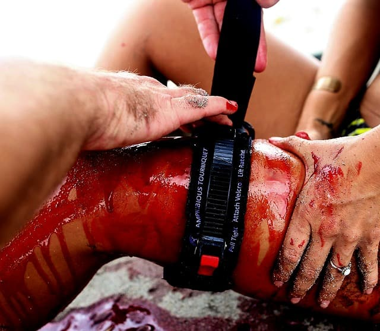
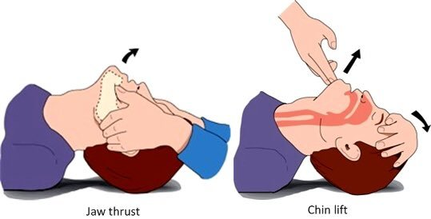
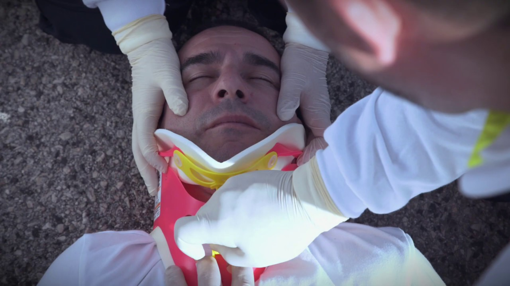
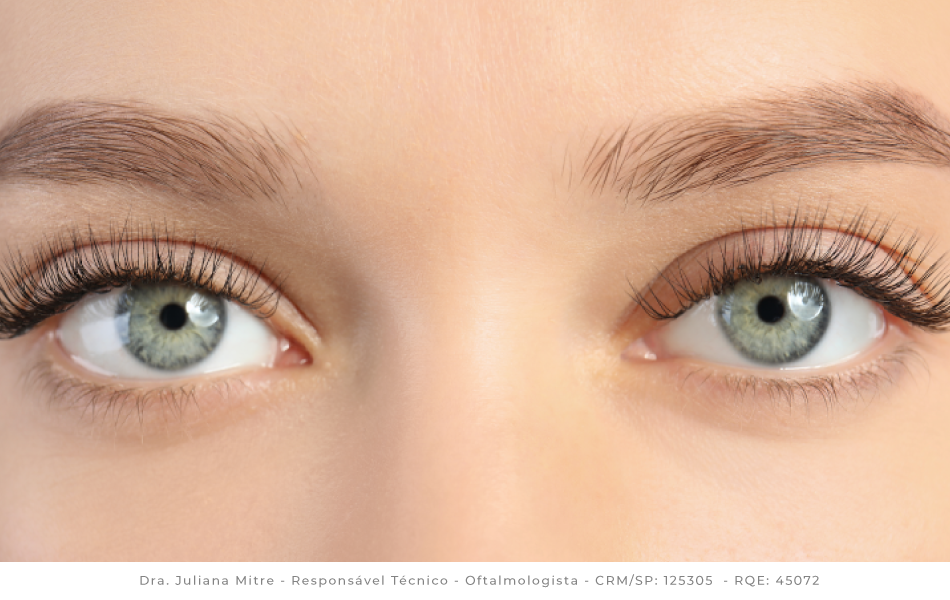

O Mneumônico XABCDE é utilizado para que o socorrista consiga prestar um atendimento mais ágil e eficaz.
Dentro do XABCDE busca-se tratar o que Mata mais Rápido, antes do que Mata mais pacientes. Também no XABCDE, nós vamos avaliar qualidade e não quantidade!
X = Hemorragias Exsanguinantes
Na letra X vamos buscar nos pacientes por Hemorragias Exsanguinantes ou Massivas. Lembrando que primeiro tratamos o que vai matar rápido essa vítima. A alta perda volêmica pode levar o paciente a óbito em questão de poucos minutos!
Dentro da letra X temos 3 tipos de Hemorragias:
-
Hemorragias Capilares: São aquelas que possuem uma cor de vermelho vivo, forte, possuem baixo fluxo ou quase nulo, é quando há uma lesão no tecido capilar (pele).

-
Hemorragias Venosas: Hemorragias venosas podem possuir baixo ou médio fluxo. Possuem uma cor vermelha mais escura devido a substâncias no sangue como dióxido de carbono, amônia, ureia e outros produtos do metabolismo. Ocorrem com lesões nos vasos venosos.

-
Hemorragia Arterial: Sangramentos com alto fluxo, com jatos pulsáteis de sangue vermelho vivo. Isso se deve à alta pressão da artéria que conduz sangue rico em oxigênio diretamente do coração. Se não estancada rapidamente, pode levar à morte em até 5 minutos.

Agora vamos para as técnicas de estancamento de hemorragias. As 5 mais comuns são:
-
Pressão Direta: Com gaze, compressa ou tecido limpo, pressione o ferimento com a mão até cessar o sangramento. Utilizada para hemorragias capilares, venosas e até arteriais.

-
Curativo Compressivo: Após aplicar pressão direta, envolva a área com atadura ou bandagem, como a israelense, mantendo a pressão constante.

-
Preenchimento de Feridas: Inserção de gaze estéril ou atadura dentro de feridas profundas para gerar pressão interna e conter o sangramento.

- Torniquete: Faixa compressiva acima do local do sangramento (membros), usada para interromper temporariamente o fluxo arterial. 
-
Agentes Hemostáticos: Substâncias aplicadas diretamente sobre feridas para promover coagulação rápida, eficazes quando o torniquete não pode ser usado.

A = Vias Aéreas e Controle da Cervical
Na letra A vamos avaliar a Perviedade das vias aéreas e fazer o controle manual da cervical para evitar o agravamento de possíveis lesões.
- Vias Aéreas: Verifique se as vias estão desobstruídas. Remova secreções, sangue ou corpos estranhos. Use as técnicas de Jaw Thrust e Chin Lift para alinhar e liberar a via aérea. 
-
Controle da Cervical: Apoie manualmente a cabeça do paciente para evitar movimentos que possam agravar lesões cervicais.
Como identificar uma possível lesão cervical?
Quando há Dor ao movimentar a cabeça, Rigidez impedindo a movimentação da cervical e Hematomas na região cervical e dor à palpação. 
B = Boa Ventilação e Boa Respiração
Na letra B vamos avaliar a qualidade da Respiração do paciente.
Qual a diferença entre Respiração e Ventilação?
- Respiração: Refere-se à troca de gases em nível celular, envolvendo a absorção de oxigênio e a eliminação de dióxido de carbono (Co2) pelas células do corpo.
- Ventilação: Refere-se ao processo mecânico de movimentar o ar de fora para dentro do nosso corpo e de dentro para fora do nosso corpo.
Oque eu devo avaliar na letra B?
- Observar os movimentos torácicos: Verificar se o tórax se expande de forma simétrica e se há sinais de esforço respiratório, como uso de musculatura acessória (músculos do pescoço ou intercostais).
- Verificar a frequência respiratória: Avaliar se está Normal, acelerada ou lenta.
- Procurar sinais de hipóxia: Observar cianose (coloração azulada na pele, lábios ou unhas) ou outros indicadores de baixa oxigenação.
- Inspecionar desvios anatômicos: Identificar desvio de traqueia, que pode indicar pneumotórax hipertensivo, ou outras anormalidades, como fraturas de costela ou tórax instável.
Exposição do Torax
Para realizar a avaliação, é necessário expor o tórax do paciente, removendo roupas com cuidado para evitar movimentação excessiva, especialmente em casos de suspeita de lesões na coluna.
Identificar e tratar problemas respiratórios
- Pneumotórax hipertensivo: Identificado por ausência de sons respiratórios em um lado do tórax, desvio de traqueia e dificuldade respiratória grave; pode exigir descompressão com agulha (SAV).
- Hemotórax maciço: Acúmulo de sangue no espaço pleural, que compromete a ventilação.
- Pneumotórax aberto: Ferimento torácico que permite entrada de ar, tratado com curativo oclusivo de três lados.
- Tórax instável: Múltiplas fraturas de costelas que causam movimentação paradoxal do tórax, exigindo estabilização e suporte ventilatório.
C = Circulação
A letra C refere-se a "Circulation" (circulação, em inglês) e corresponde à etapa de avaliação e manejo da circulação sanguínea e controle de hemorragias. Essa fase foca em identificar e tratar perdas sanguíneas significativas e garantir a perfusão adequada dos órgãos vitais.
O que envolve a letra C no XABCDE?
Dentro da letra C o socorrista deve checar o H e os 4 Ps
- Hemorragias: Na letra C deve se buscar por pequenas hemorragias, e assim que identificada, estancalas de imediato.
- Pulso: Deve-se checar o pulso do paciente avaliando dois pontos principais: o pulso radial, localizado na parte interna do punho, e o pulso carotídeo, encontrado na lateral do pescoço.
O socorrista deve observar:
- Frequência: se o pulso está lento (bradicardia) ou acelerado (taquicardia);
- Força: se é forte ou fraco
- Ritmo: se é regular (rítmico) ou irregular (arrítmico)
- Pele: Deve-se observar atentamente as características da pele do paciente, verificando:
- Cor: se está pálida, avermelhada, arroxeada ou com coloração normal
- Temperatura: se a pele está quente, fria ou morna;
- Umidade: se está seca, úmida ou pegajosa.
- Palpação: A palpação aqui é usada para identificar sinais de sangramento externo ou interno, principalmente hemorragias que podem colocar a vida do paciente em risco imediato. O socorrista palpando a área busca por:
- Sangramento ativo (sangue saindo visivelmente)
- Hematomas ou inchaço que indiquem sangramento interno
- Fraturas que podem causar hemorragias internas graves
Como fazer a palpação?
Use as pontas dos dedos e a palma da mão:
- Comece com toque leve e depois aumente a pressão gradualmente para sentir melhor os sinais.
- A palpação deve ser sistemática e cuidadosa para não causar dor ou agravar lesões.
Observe reações do paciente:
- Se ele sente dor localizada, pode indicar lesão ou hemorragia naquele ponto.
- Verifique se há edema (inchaço), rigidez ou deformidade.
Procure sinais indiretos:
- Temperatura da pele: pele fria pode indicar má perfusão causada por sangramento.
- Pulsação: sentir pulsos periféricos (ex: pulso radial, femoral) para avaliar a circulação.
Onde fazer a palpação?
Na etapa C, a palpação deve focar principalmente nas áreas com risco alto de sangramento grave:
- Região do pescoço: para detectar hematomas ou sangramentos no local, além de verificar pulsos carótidos.
- Tórax: para identificar possíveis ferimentos penetrantes ou hematomas.
- Abdômen: área onde sangramentos internos são comuns em traumas; a palpação pode revelar dor intensa ou rigidez.
- Pelve: para detectar instabilidade ou dor que sugira hemorragia interna.
- Membros superiores e inferiores: verificando sangramentos externos, deformidades, e pulsos periféricos.
D = Déficit Neurológico
A letra D do protocolo XABCDE tem como objetivo avaliar o estado neurológico do paciente de forma rápida e eficaz. A principal ferramenta utilizada neste estágio é a Escala de Coma de Glasgow (ECG).
üß™ Escala de Coma de Glasgow (ECG)
Ela mede a resposta neurológica do paciente por meio de três parâmetros:
- Abertura ocular (O): máximo de 4 pontos
- Resposta verbal (V): máximo de 5 pontos
- Resposta motora (M): máximo de 6 pontos
üìã Detalhamento da ECG
üü¶ 1. Abertura Ocular (O)
- 4 – Espontânea
- 3 – Ao comando verbal
- 2 – À dor
- 1 – Nenhuma resposta
üü¶ 2. Resposta Verbal (V)
- 5 – Orientado
- 4 – Confuso
- 3 – Palavras inapropriadas
- 2 – Sons incompreensíveis
- 1 – Nenhuma resposta
üü¶ 3. Resposta Motora (M)
- 6 – Obedece a comandos
- 5 – Localiza dor
- 4 – Retira ao estímulo doloroso
- 3 – Flexão anormal (decorticação)
- 2 – Extensão anormal (descerebração)
- 1 – Nenhuma resposta
üßÆ Como calcular a ECG?
Some os valores de O + V + M. Exemplo: 3 (ocular) + 4 (verbal) + 5 (motora) = ECG 12.
üìå Interpreta√ß√£o da ECG
- 15 – Normal
- 13–14 – Rebaixamento leve
- 9–12 – Moderado
- ≤ 8 – Grave (comatoso)
üëÅÔ∏è‚Äçüó®Ô∏è Avalia√ß√£o Pupilar
- Anisocoria: pupilas de tamanhos diferentes (pode indicar lesão cerebral)
- Miose: pupilas contraídas (uso de opioides) 
- Midríase: pupilas dilatadas (anóxia ou drogas)

- Não reativas à luz: pode indicar lesão grave ou hipertensão intracraniana
üí™ Mobilidade e Sensibilidade
Verifique se o paciente consegue mover braços e pernas ou sente estímulos táteis.
üßÉ Glicemia Capilar (opcional)
Hipoglicemia pode causar alteração de consciência. Verifique a glicemia se possível.
✅ Exemplo prático
- Não abre olhos → O = 1
- Emite sons incompreensíveis → V = 2
- Retira braço à dor → M = 4
- ECG = 7 → Estado grave
- Pupilas anisocóricas
- Sem movimentos nos membros inferiores
- Glicemia: 89 mg/dL
Conduta: manter VA pérvia, oxigenar, imobilizar, transporte imediato.
E = Exposição e Controle de Hipotermia
A letra E do protocolo XABCDE refere-se à exposição do paciente e o controle de temperatura para evitar a hipotermia. O objetivo é identificar sinais visíveis de trauma, doenças ou outras condições que possam comprometer a vida.
ü©∫ O que observar ao expor o paciente?
- Ferimentos abertos: cortes, perfurações, lacerações.
- Equimoses: hematomas ou manchas roxas que indicam sangramento interno.
- Deformidades: fraturas expostas ou fechadas, desalinhamentos ósseos.
- Cor da pele: palidez, cianose (arroxeado), icterícia (amarelado).
- Presença de corpos estranhos: vidros, metais, estilhaços, etc.
- Edemas: inchaços que podem indicar inflamação ou trauma grave.
- Estigmas de doenças: sinais de diabetes, infecções cutâneas, uso de drogas intravenosas, etc.
üߧ Como realizar a exposi√ß√£o com seguran√ßa?
- Proteja a privacidade: exponha o paciente apenas o necessário e por tempo limitado.
- Evite hipotermia: pacientes traumatizados perdem calor com facilidade. A exposição deve ser breve e controlada.
- Reaqueça se necessário: use mantas térmicas, cobertores, ou aquecedores portáteis em clima frio.
- Remova roupas úmidas: se estiverem molhadas por chuva, sangue ou suor, substitua por cobertas secas.
üå°Ô∏è Controle de Hipotermia
O controle da hipotermia é fundamental. A perda de calor pode levar à:
- Coagulopatia: o sangue coagula pior em baixas temperaturas.
- Acidose metabólica: desequilíbrio químico perigoso no sangue.
- Bradicardia e arritmias: o coração fica mais instável em temperaturas baixas.
Esses fatores fazem parte da chamada Tríade Letal do Trauma:
- Hipotermia
- Acidose
- Coagulopatia
üõ†Ô∏è Ferramentas úteis
- Tesoura de APH (para cortar roupas)
- Lanterna para inspeção noturna
- Luvas e EPI completo
- Manta aluminizada (manta térmica)
- Cobertores secos ou térmicos
✅ Exemplo prático
- Paciente com trauma torácico e abdominal após colisão frontal.
- Equimoses visíveis, sinais de fratura em membros inferiores.
- Temperatura ambiente: 15°C.
- Conduta: exposição rápida para inspeção, uso de manta térmica imediatamente após inspeção, imobilização e transporte rápido.
üìå Finalizando a Avalia√ß√£o Primária
Com a letra E, conclui-se a Avaliação Primária. Caso o paciente esteja estabilizado, procede-se para a Avaliação Secundária com exame detalhado e histórico médico.